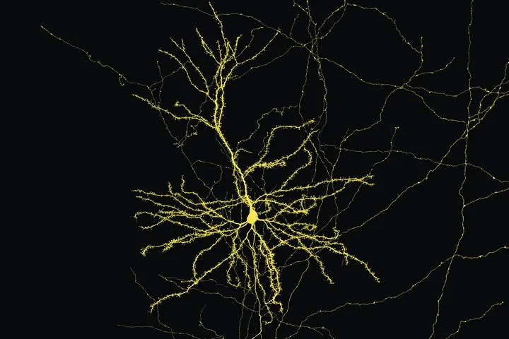

Seung Lab
EyeWire II and Pyr
Games where players proofread real connectomes: the mouse retina in EyeWire II, the hippocampus in Pyr. I design the game, the tools and the community around it, and I write a lot of the code.
Princeton Neuroscience Institute
I design the games, tools and pictures that let people map the brain, one neuron at a time. Then I build about a hundred other things, most of which you can play with on this page.
Counted from GitHub every morning.

Now
Seung Lab
Games where players proofread real connectomes: the mouse retina in EyeWire II, the hippocampus in Pyr. I design the game, the tools and the community around it, and I write a lot of the code.

FlyWire
Design, renders and public tools for FlyWire, the first complete wiring diagram of an adult fly brain, and its sequel the BANC, which adds the nerve cord.

For everyone
Real reconstructed neurons for people who have never seen one, from kindergarten up. It runs on a museum wall in Boston and as a site anyone can open.

Renders
Figures and animations for connectomics papers: CA3 in the hippocampus, the mouse retina with calcium imaging played back on it, MICrONS cortex, the BANC.
Play
Each one is the real, live site, running inside this page. Pick one from the list. Anything in the project list below with a ▶ can be opened here too.
Choose something on the left.
Neuron Snake is a good place to start.
Map
My repository mapper pulls related projects close together and sorts them into seven rooms. Filter by room, play the year forward month by month, or take one of its guided tours.
The mapper is a separate site with its own snapshot. Open it full size ↗
Projects
Pulled from GitHub every morning. Commits count only what I wrote this year; the robots that refresh some sites on a schedule are left out.
Gallery
Every cell in these was reconstructed from electron microscopy, mostly by people playing games. Click any one to see it large.
Talks, exhibitions, press
TEDxKyoto
On blending machine intelligence with crowdsourced human intellect to map the brain.
Among the nerds who matter.
NBC News
There is no limb she won't go out on, no dendrite she won't explore, if she thinks it will lead to a breakthrough.
The Boston Globe
Pretty impressive.
Chris Hadfield, former ISS commander
The New York Times Wired National Geographic Nature NPR Smithsonian NBC News Scientific American Slate Vsauce3 My Forbes column
About
I work at the Princeton Neuroscience Institute in Sebastian Seung's lab, where we map the brain neuron by neuron and invite everyone to help. For years I ran Eyewire, the game where players all over the world trace neurons in the retina. Now I build its successors, EyeWire II and Pyr, and I give some of my time to FlyWire and the Murthy Lab.
I have published in Nature and Cell, written about neuroscience and data visualization for Forbes, and advised the White House Office of Science and Technology Policy on innovation methods. Forbes put me on its 30 Under 30 list in 2015, and Fast Company called me an Innovation Agent. I also founded the TEDx Music Project.
Most evenings I build things with my two kids: games, a robot, a site full of jokes. They have strong opinions and they are usually right.